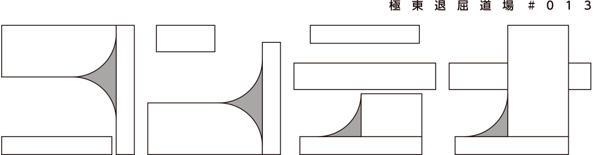
作・演出／林慎一郎
ニュース
- 2023.6.5 「コンテナ」アフタートーク情報公開
- 2023.5.14 「コンテナ」LINEアカウント公開
- 2023.5.1 チケットお申込み受付開始しました
- 2023.4.26 これまでの公演情報を更新しました
- 2023.4.20 コンテナ特設サイトオープン
- 「コンテナ」アフタートーク
- 林慎一郎が今回の作品を解説します。
- アンケートでいただいたご質問にお答えいたしますので、
公演後、アンケートやフォームより、ご質問などをご記入くださいませ。
- ■概要
- 6月11日（日）終演後、17:00から
- オンライン（YouTube）での開催
- ＊アンケートでいただいたご質問に答える形で、林慎一郎が今回の作品を解説します。
- ■参加方法
- 当日、時間になりましたら、
- 以下よりアクセスしてください。
- ・6月11日（日）17:00〜
- https://youtube.com/live/7FNYM93w4RE
- ＊アーカイブ
- 一定期間、アーカイブを残します。
- ＊作品への質問方法
- 作品に関する質問やコメントなど、
- 公演後に配布されるアンケートにご記入下さいませ。
- 質問やコメントいただいた方でなくてももちろん構いませんので、
- お気軽にご参加くださいませ。お待ちしています。
- 「コンテナ」特設LINEアカウント
- 極東退屈道場のLINEアカウントを作りました。
- ６月の新作「コンテナ」にまつわる、観劇に役に立ったり立たなかったりする小ネタを定期配信しています。
- ようやくそういうお声にお応えできた感じです・・・。
- ぜひ友達追加してくださいませ。

公演概要
- 日程:
- 2023 年 6 月 9 日(金)〜11 日(日) 全３回
-
6/9（金） 19：00 6/10（土） 14：00 6/11（日） 14：00 - ※受付・開場は、開演の４０分前開始
- 会場: 山本能楽堂（大阪市中央区徳井町 1-3-6）
- 主催・問合:極東退屈道場 TEL090-1248-1838(ハヤシ)
- e-mail:askto@taikutsu.info
- web サイト:http://taikutsu.info/
-
- 助成:芸術文化振興基金助成事業
- 共催:公益財団法人 山本能楽堂
作品概要
夢洲は長く荒廃したままで、中央に広い駐車場のコンビニエンスストアがたつのみだった。北側は荒れた湿地が広がり野犬の姿も見えるが長く放置された功罪か多くの野鳥や昆虫の生息場所となっている。
一転、南側は堆くコンテナが積み上げられたターミナルがある。コンテナは20世紀最大の発明と言ってもよく、物流に革命を起こしグローバリゼーションにはなくてはならないものとなっている。コロナ禍でのコンテナ不足による混乱も記憶に新しく、コンテナの荷動きそのものが世界経済の推移と連動して行っているとも過言ではない。世界共通の規格であることは、輸送以外の使用への転用にも便利で仮設住宅やホテルなどでも使わていれる。カラオケボックスの始まりがコンテナであったことを記憶する人も多いだろう。あの規格化された箱の中には、多くの物語が詰まっている。港湾都市、砂上都市”大阪”を、このコンテナの目線から記録してみようと思っている。奇しくも、負の遺産として長く放置された島は、万博、IRというビッグマネーを利用して強引に蘇生させられようとしている。積み上げられたコンテナの向かい側に立つ、パビリオン。その言葉の語源は仮設建設である。
林慎一郎
プロフィールはこちら＞＞＞
キャスト
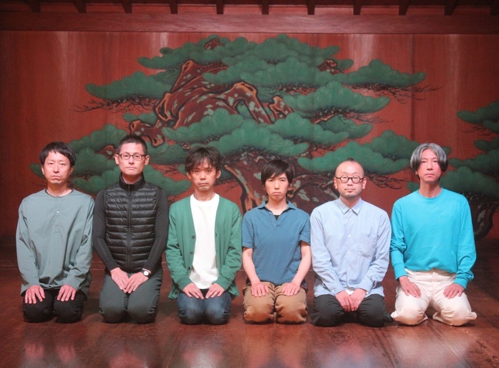

石原菜々子（kondaba）
東京都出身。学生演劇を経て、2012年劇団維新派入団。維新派解散後、金子仁司と「kondaba」を旗揚げ。劇団以外にも精力的に外部出演をこなす。林作品は、「LG20/21クロニクル」より参加。

小竹立原
愛知県出身。大阪に進学し、演劇に出会い、卒業後も継続。近年は極東退屈道場に多数出演。代表作は「サブウェイ」「タイムズ」など。

加藤智之（DanieLonely）
岐阜県出身。高校で演劇と出会い25歳の時France_panに入団 その後永見陽幸らと「DanieLonely」を結成。現在は、劇団活動はお休み中であるが、客演多数。林作品は、「百式サクセション」より参加。
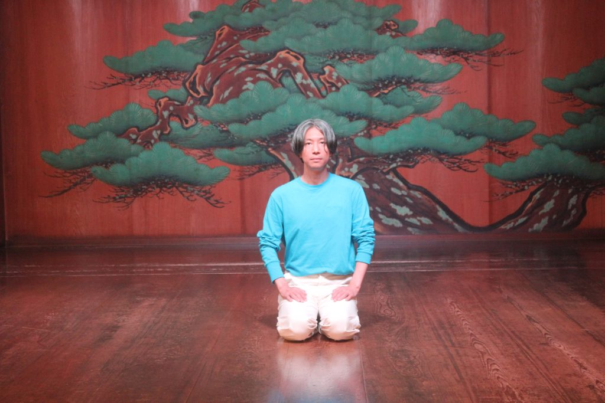
桑折現
演出家、俳優。10代より大阪の小劇場で俳優として活動。大学在学中に＜dots＞を結成し、2001～2015年までの活動中、主宰と全作品の構成・演出を担当。2011年より俳優としての活動を再開し、様々な演出家の作品に出演。
林作品には「ジャンクション」に参加。

小坂浩之
石川県出身。初舞台は学生劇団で上演した「ゼンダ城の虜」。桃園会に1999年から2009年まで所属し、以後フリーランスで活動。演劇だけでなく、ダンスやパフォーマンスなど横断的に出演している。林作品は「延髄がギリです。」以降、断続的に出演。

橋本浩明
愛知県出身。学生劇団を経て、23歳で水の会メンバーとなる。その後、燐光群を経てフリーへ。林演出作品には、大阪大学人文学研究所・大阪大学総合博物館アート人材育成プログラム「中之島デリバティブ」より参加。
スタッフ：
作・演出／林慎一郎
舞台美術デザイン／柴田隆弘 照明／魚森理恵 音響／あなみふみ
舞台監督／古谷晃一郎 衣装／大野知英 宣伝デザイン／酒井昌子 WEBデザイン／佐藤由典
制作協力／さかいひろこworks
制作／奈良歩
チラシ
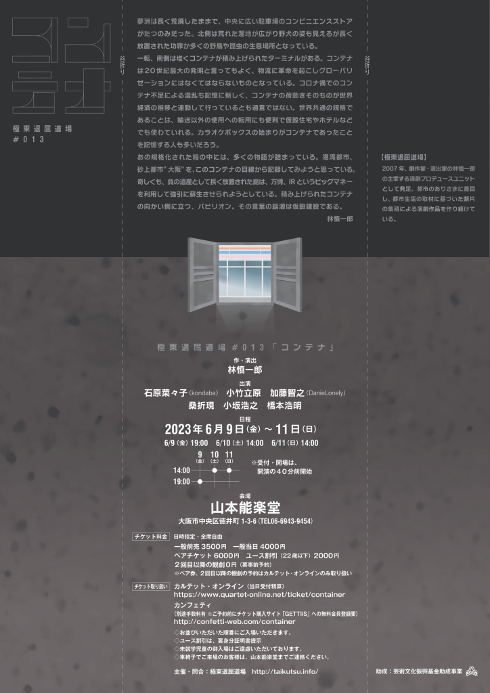
【車載動画】此花大橋〜舞洲〜夢舞大橋〜夢洲〜夢咲トンネル
大阪湾に浮かぶ三つの人工島がある。舞洲・夢洲・咲洲と名付けられたその島は、川から絶えず流れ込む土砂や、廃棄物の焼却灰によって作られた埋立地だ。
2014年、折しも東京オリンピック誘致決定に湧く中、舞洲を扱った「ガベコレ」という作品をつくった。
2008年、オリンピック誘致の候補地ともなったこの島を舞台に、都市生活者と都市計画の関係を演劇化した。
その時、とても気になっていたのが夢洲だ。すでにカジノ誘致が話題に上ってしたその島は、まだ何もない湿地帯だった。
2025年の万博開催も決まり、にわかに騒がしくなった夢洲。
今回はそれに材を取ってみようと思っている。
この3年は、「ソコハカ」という水に沈んでしまった架空の都市に「オオサカ」を二重写しにしてきた。
「ガベコレ」のときには、もちえなかった手法で新たに風景を描く物語をつくろうと思っています。
これまでの公演
ガベコレ garbage collection #006
2014年 INDEPENDENT 1st(大阪)/シアターZOO(札幌)
2008年オリンピック誘致が叶わず、開発が思うように進まなかった大阪湾に浮かぶ埋立地”舞洲”を扱う。舞洲入り口に建つ、フンデルトワッサーデザインのゴミ・汚泥処理処理場を中心に、膨大な公的文書と2回のワークインプログレスで収集した市民インタビューをコラージュ。時を同じくして開催された大阪マラソンのコースを俳優と演出家で走り、埋立地を目指す体験を織り交ぜ、「私たちにとってこの街とは」を問いかけるパフォーマンス。
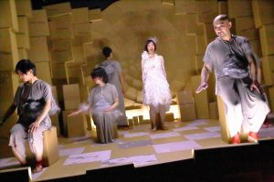
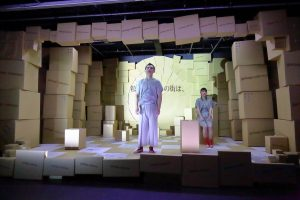
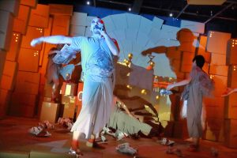
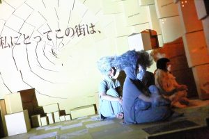
撮影:清水俊洋
PORTAL
作:林慎一郎 演出:松本雄吉(劇団維新派)
2016年 ローズ文化ホール(大阪)/あしびなーホール(沖縄)
高知市文化プラザかるぽーと(高知)/ロームシアター(京都)
高知市文化プラザかるぽーと(高知)/ロームシアター(京都)
伊丹空港の南側、豊中市、庄内地域を題材とした。着陸する飛行機が轟音を立てて頭上をかすめ、「空地」と呼ばれる場所が点在する町。その町で暮らす男が、位置情報ゲーム「ingress」とラジオ交通情報放送”ジャティックの〇〇さん”の声に導かれながら、大阪と思しき、架空都市の「辺境」から「真ん中」を目指す物語。道中、男は現代都市の様々な断片と出会い、巻き込まれていく。
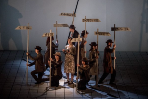
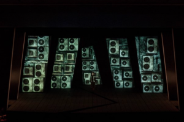
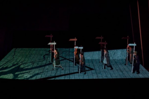
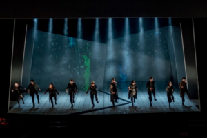
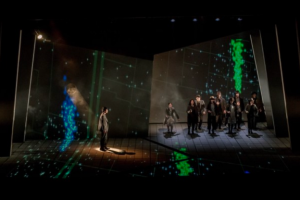
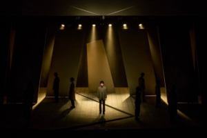
撮影:井上嘉和
ファントム #008
2017年 アイホール（兵庫）ナビロフト（名古屋）
コインロッカーの中で目覚めた６人の男女。彼らは預けられた荷物なのか。 コインロッカーの扉は鍵がかかり当然、中からは開けられない。が、その扉以外の残りの五つの面には非常口のランプがともる。 ロッカーからロッカーへ。 くぐりぬけるコインロッカーの居室は、都市を構成する様々なモジュールに姿を変えていく。
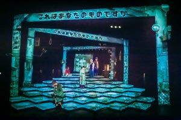
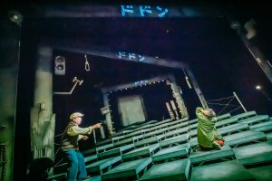
撮影:清水俊洋
808ダイエット #009
2018年 AI・HALL (兵庫)
大阪の重要な境界線であった東横堀川を題材とした。かつて大阪八百八橋と呼ばれたほど、大阪には多くの橋がかかっていた。境界線としても、水路としても重要な役割を果たしていた東横堀川は、今は阪神高速道路に覆われ鬱蒼として暗い。ダイエットのため、川にかかるたくさんの橋をジグザグに跨ぐように走り続ける男。川に沿って、北から南へ、東から西へと走りながら、男は川が映す、大阪の断片と出会っていく。
撮影:清水俊洋
ジャンクション #010
2019年 江之子島文化芸術創造センター(大阪)
かつては府庁が置かれ、大阪の玄関口として栄えた江之子島を題材とした。大阪と思しき架空の町「ソコハカ」。どうやらその町はすでに水没しているらしい。父の行方がわからなくなった四人の男が、久しぶりに集まる。上演場所も江之子島とし、観客は俳優に誘われ、劇場内外の様々なエリアを巡り、ソコハカの町の来し方行く末を鑑賞するツアーパフォーマンス。志人による90分連続のラジオ放送も話題となる。
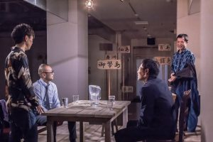
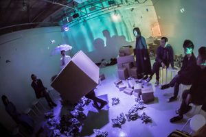
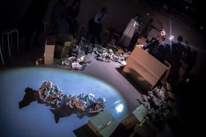
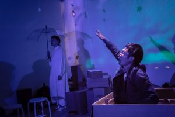
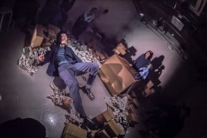
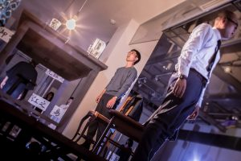
撮影:清水俊洋
LG20/21クロニクル #011
2020年 江之子島文化芸術創造センター(大阪)
大阪中心部の人口増加「逆ドーナツ化現象」の要因の一つ、増加するタワーマンション、また都市から姿を消しつつある電話ボックスを題材とした。観客は会場の4階と1階に分かれ、全てのシーンを見ることはできない。俳優が各階を行き来しながらパフォーマンスを行うが、やりとりのほとんどは各階に五台ずつ置かれた電話ボックス内の公衆電話を通じて行われる。ある日、タワーマンションで暮らしていた小学生の少女が失踪する。犯人と思しき男は、彼女の身につけてみたものを一つずつ、高額でフリマサイトに出品していく。現代都市住民の関係の希薄さや、コミュニケーションの距離感を考えるパフォーマンス。
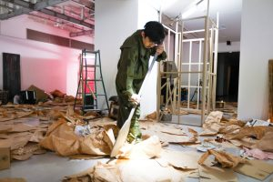
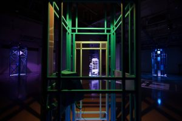
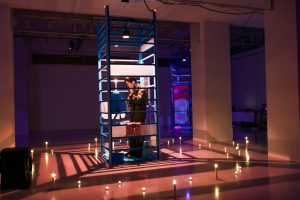
撮影:面高真琴
クロスロード #012
2022年 山本能楽堂(大阪)
大阪中心部に建つ能楽堂で上演。かつて大阪大空襲が直撃した場所であることをもとに創作。戦禍を逃れた少女が、疎開先のアスカの地で外国人の男で出会う。彼らは山の中で見つけた不思議な標識を自分たちの神様と呼んで、仲良くなる。二人は、ずっとその場所を守ることを約束するが、戦災が二人を引き剥がす。彼らの約束は、はるか後、大阪が水没しソコハカと呼ばれるようになるまではたされることなく残り続ける。小銭を忘れた男が電話ボックスの中で目を覚ます。彼は不思議な男と囲碁を打つことになる。それは、はるか昔の約束の物語だった。彼は生駒山頂の三角点より、大阪の街を俯瞰する。遠くウクライナで起きた戦争にも思いをはせ、「難民」の言葉を掘り起こそうと試みた。
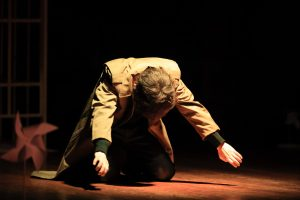
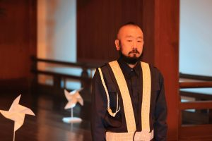
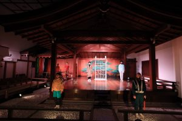
撮影:面高真琴
能×現代演劇シリーズ 2016-2019年 山本能楽堂(大阪)
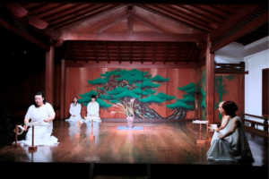
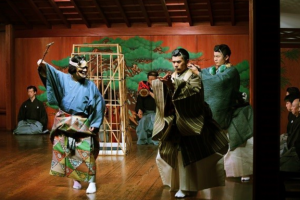
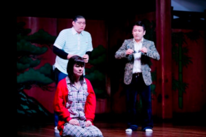
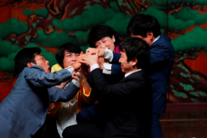
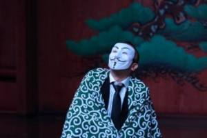
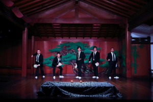
撮影:面高真琴
チケット
- 日程:
- 2023 年 6 月 9 日(金)〜11 日(日) 全３回
-
6/9（金） 19：00 6/10（土） 14：00 6/11（日） 14：00 - ※受付・開場は、開演の４０分前開始
- チケット料金:日時指定・全席自由
-
一般前売 3,500円 一般当日 4,000円 ペアチケット 6,000円 ユース割引（22歳以下） 2,000円 ２回目以降の観劇 0円（要事前予約） - ２回目以降の観劇0円（要事前予約）
- ※ペア券、2回目以降の観劇の予約はカルテット・オンラインのみ取り扱い
- チケット取り扱い：
- カルテット・オンライン（当日受付精算）
- https://www.quartet-online.net/ticket/container
- カンフェティ（別途手数料有 ※ご予約前にチケット購入サイト「GETTIIS」への無料会員登録要）
- http://confetti-web.com/container
- ◇お並びいただいた順番にご入場いただきます。
- ◇ユース割引は、要身分証明書提示
- ◇未就学児童の御入場はご遠慮いただいております。
- ◇車椅子でご来場のお客様は、山本能楽堂までご連絡ください。
- 会場: 山本能楽堂（大阪市中央区徳井町 1-3-6）
- 【電車でお越しの場合】
地下鉄谷町線・中央線「谷町四丁目」駅下車４番出口より徒歩約５分。
谷町筋に沿って北へ。
１筋目(ホテルサンホワイト)手前を左折。
一筋越えてすぐ左手。 - 【お車でお越しの場合】
梅田、なんば、天王寺各方面から約15分
※山本能楽堂前の通りは東行きの一方通行となります。
※駐車場はございません。近隣コインパーキングをご利用下さい。 - ＊お並びいただいた順番にご入場いただきます。
- ＊ユース割引は、要身分証明書提示
- ＊未就学児童の御入場はご遠慮いただいております。
-
- 主催・問合:極東退屈道場 TEL090-1248-1838(ハヤシ)
- e-mail:askto@taikutsu.info
- web サイト:http://taikutsu.info/
- 主催:極東退屈道場
- 助成:芸術文化振興基金助成事業
- 共催:公益財団法人 山本能楽堂
カルテット・オンラインでお申し込みはこちら
（当日受付精算）
カンフェティでお申し込みはこちら
（別途手数料有 ※ご予約前にチケット購入サイト「GETTIIS」への無料会員登録要）
リンク
- 【プロフィール】極東退屈道場プロフィール | taikutsu.info
- 【極東退屈道場】 http://taikutsu.info/
- 【Twitter】https://twitter.com/kyokuto2007
- 【FB】https://www.facebook.com/dojotaikutsu/
- 【お問い合わせ】極東退屈道場 お問い合わせフォーム
- 「コンテナ」アフタートーク
- 当日、時間になりましたら、以下よりアクセスしてください。
- 6月11日（日）17:00〜
- https://youtube.com/live/7FNYM93w4RE
- 「コンテナ」特設LINEアカウント
- 極東退屈道場のLINEアカウントを作りました。
- ６月の新作「コンテナ」にまつわる、観劇に役に立ったり立たなかったりする小ネタを定期配信しています。
- ようやくそういうお声にお応えできた感じです・・・。
- ぜひ友達追加してくださいませ。
© 極東退屈道場_#013 コンテナ